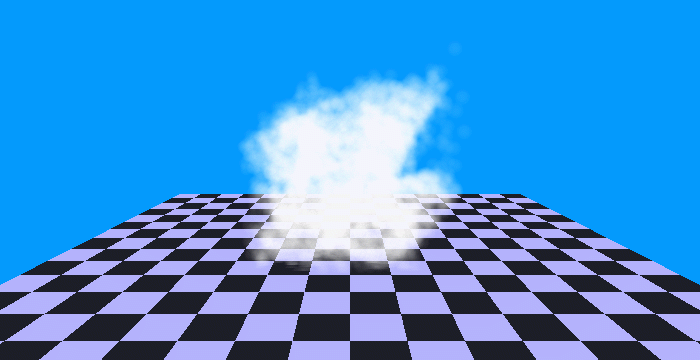
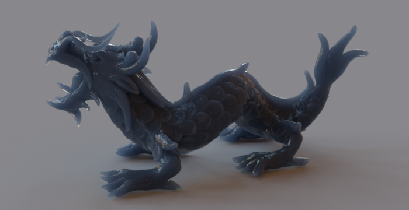
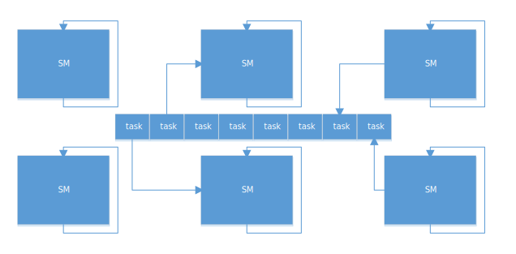
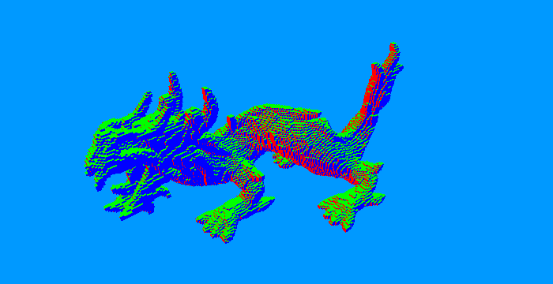
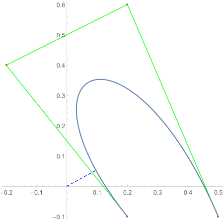

View on GitHub A GPU radix sorter using the OpenGL compute shader. Starting from the least significant bit, all the integer keys are ordered by 2 bits (i.e. radix 4) each time. The keys owning the same digit are grouped by counting the number of each digit with a parallel scan primitive. We implement this recursive primitive based on a step-efficent circuit to alleviate CPU-GPU synchronization latency, and assign 4 input elements per thread to hide memory latency. Then in each step the number of elements is rounded up to the nearest multiple of 4 such that arbitrary number of keys are allowed. This sorter is applied to the order-independent transparency, which requires the point sprites to be depth-sorted.
View on GitHub A CPU path tracer relying on the 4-way bounding volume hierarchy (BVH). During BVH construction 4 triangles or bounding boxes are packed into a node such that they can be intersected with a ray in parallel. The Eigen library is employed to vectorize the intersection algorithms, allowing compatibilty with both SIMD and AVX instructions. Below are some eye candies resulting from our tacer.
View on GitHub A minimum CUDA persistent thread example. On the GPU a streaming multiprocessor (SM) consists of multiple execuation units. Many warps of threads should be kept resident and issued across these units to hide both arithmetic and memory latency. For irregular workloads the GPU is occupied by a few long-running threads, leaving most SMs starved before another kernel can be launched. The persistent approach steups just maximum resident warps per SM to improve throughput. This enables each thread to call corresponding procedure given a task from the queue, within a single (mega) kernel.
View on GitHub A GPU triangle mesh voxelizer using the geometry shader. The overlapped voxels of a triangle are identified by the triangle-cube intersection test. And all the cubes touching the axis-aligned bounding box of a triangle are considered. A triangle is first transformed such that the xy-plane has its maximum projection among three coordinate planes. This reduces branches thus alleviating thread divergence. The triangle plane is simply expected to lie between the minimum and maximum cube corners. Along with the triangle, an eligible cube is further test to see if their projections in all coordinate planes overlap. For visualization, cubes along each per-pixel ray are visited front-to-back until a voxel is hit (i.e. ray casting/marching).
View on GitHub An iterative point to cubic Bézier curve distance solver. At first they are translated to place the point at the origin for convenience. The goal is to find a curve point such that its dispacement vector to the origin is perpendicular to the tangent vector at that point. Since the tangent is a quadratic Bézier curve, its dot product with the displacement is a quintic Bernstein polynomial. This also results in an explcit Bézier curve whose roots are just intersections with the t-axis. And they are guaranteed to lie in the intersected interval between the convex hull of the control points and t-axis. An intersection is approached by clipping the quintic curve to the interval using the de Casteljau's algorithm, after solving its hull with the Melkman algorithm for polyline. This procedure is repeated until the left endpoint is on the t-axis. A root is obtained and isolated from the polynomial, resulting a lower degree polynomial for remaining roots. The WSTP API of Mathematica is employed to visualize this process.
